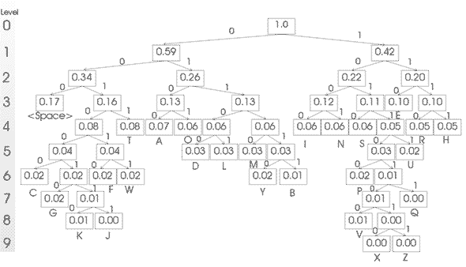
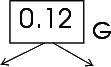
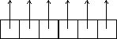

|
Κωδικοποίηση Huffman σε Pascal (download)
Εκφώνηση: Α. Σχεδιάστε ένα πρόγραμμα σε
pascal που υλοποιεί τον αλγόριθμο για την κατασκευή δέντρου Huffman.
Χρησιμοποιείστε για σύμβολα μόνο τα γράμματα του Λατινικού αλφαβήτου
και το κενό και για συχνότητες αυτές του πίνακα της φωτοτυπίας
Β. Προαιρετικά: Σχεδιάστε
διαλογικό πρόγραμμα σε pascal που να έχει τη δυνατότητα να κωδικοποιήσει
και να αποκωδικοποιήσει αγγλικό κείμενο (αγνοώντας σημεία ατίξης,
κ.λ.π) χρησιμοποιώντας το παραπάνω πρόγραμμα.
Τα αποτελέσματα που αντιστοιχούν
στο παρακάτω δέντρο huffman και τους κωδικούς.
Για καλύτερη ποιότητα, κάντε click πάνω στην εικόνα:

Ο παρακάτω πίνακας δείχνει τον κώδικα κάθε γράμματος. Τα αποτελέσματα
είναι όπως τα περιμέναμε.Τα γράμματα που συναντόνται ποιό συχνά
στο Αγγλικό αλφάβητο έχουν μικρότερο πλάτος. Με αυτόν τον τρόπο
το αρχικό κείμενο συμπιέζεται αρκετά:
| char |
code |
char |
code |
char |
code |
A
B
C
D
E
F
G
H
I |
0100
011111
001000
01100
110
001010
0010010
1111
1000 |
J
K
L
M
N
O
P
Q
R |
00100111
00100110
01101
01110
1001
0101
101100
1011011
1110 |
S
T
U
V
W
X
Y
Z
<space> |
1010
0011
10111
10110100
001011
101101010
011110
101101011
000 |
A. Ας δούμε τις επί μέρους procedures:
1. Κατ'αρχάς η δήλωση του κόμβου (node). Όπως βλέπουμε,
αυτός αποτελείται από έναν πραγματικό αριθμό, έναν χαρακτήρα και
δύο δείκτες προς άλλους κόμβους. Συνεπώς η δήλωσή του είναι προφανώς:
|
type Nodeptr= ^Nodetype;
Nodetype = record
info : char;
posibility : real;
right : Nodeptr;
left : Nodeptr
end;
|
 |
| Forest=array[1..maxtrees] of Nodeptr; |
 |
2. Η κλασική ρουτίνα AddNode
ελαφρώς τροποποιημένη για την περίπτωση:
|
procedure addNode(var listhead: Nodeptr; character:char;
posib : real; left,right : Nodeptr );
var node : Nodeptr;
begin
new(node);
node^.info:=character;
node^.posibility:=posib;
node^.left:=left;
node^.right:=right;
listhead:=node;
end;
|
3. H procedure Initialize φορτώνει στο πρόγραμμα τα στοιχεία
του πίνακα από την φωτοτυπία.
|
procedure initialize(var list : Forest ; var n:integer
) ;
begin
addNode(list[1], 'a',0.065, nil , nil);
addNode(list[2], 'b',0.013, nil , nil);
addNode(list[3], 'c',0.022, nil , nil);
addNode(list[4], 'd',0.032, nil , nil);
...
...
addNode(list[23],'w',0.018, nil , nil);
addNode(list[24],'x',0.001, nil , nil);
addNode(list[25],'y',0.017, nil , nil);
addNode(list[26],'z',0.001, nil , nil);
addNode(list[27],'/',0.172, nil , nil);
n:=maxtrees;
end;
|
5. Το πρώτο βήμα του αλγορίθμου Huffman. Ένωση των δύο τελευταίων
δέντρων από την λίστα - δάσος list. Φροντίζουμε έτσι ώστε το δέντρο
με τη μεγαλύτερη πιθανότητα να είναι αριστερά ενώ το άλλο δεξιά.
|
procedure merge_last(var list:Forest ; n,i: integer);
var posib:real;
begin
posib:= list[n-i+1]^.posibility + list[n-i]^.posibility;
if (list[n-i+1]^.posibility > list[n-i]^.posibility)
then
addNode(list[n-i],' ',posib, list[n-i+1] , list[n-i])
else
addNode(list[n-i],' ',posib, list[n-i], list[n-i+1]);
end;
|
6. Η κλασική procedure swap που χρησιμοποιείται στην μέθοδο ταξινόμησης
bubblesort, ελαφρώς τροποποιημένη για εναλλαγή δεικτών:
|
procedure swap(var p,q : Nodeptr);
var temp:Nodeptr;
begin
temp:=p;
p:=q;
q:=temp;
end;
|
7. Το δεύτερο βήμα του αλγορίθμου Huffman. Ταξινόμηση με την
μέθοδο bubblesort, των δεικτών της λίστας list, έτσι ώστε να έχουν
φθίνουσα πιθανότητα εμφάνισης:
|
procedure rearrange(var list:Forest; n,i: integer);
var count:integer;
begin
for count:=0 to n-i-1 do
if list[n-count-i+1]^.posibility > list[n-count-i]^.posibility
then
swap(list[n-count-i+1],list[n-count-i]);
end;
|
8. Το κυρίως πρόγραμμα είναι, πλέον, απλούστατο:
| begin
initialize(list, n); { Arxikopoiisi }
for i:=1 to n do rearrange(list,n,i);
{arxiki taxinomisi me tin me8odo bubblesort}
{ O algori8mos opws dinetai sto fulladio}
for i:=1 to n-1 do
begin
merge_last(list,n,i);
rearrange(list,n,i);
end;
writetree(list[1]); {emfanisi tou telikou dentrou}
end.
|
9. Τώρα το μόνο που μας έμεινε είναι η procedure writetree που
γράφει το τελικό δέντρο στο αρχείο huffman.txt και τον κωδικό
του κάθε χαρακτήρα στο αρχείο binary.txt. Η ανάγνωση του δέντρου
γίνεται με την αναδρομική ρουτίνα writenode.
procedure writetree(list:Nodeptr);
begin
Assign(g, 'huffman.txt'); { exodos se arxeio }
rewrite(g);
Assign(h, 'binaries.txt'); { exodos se arxeio }
rewrite(h);
writenode(list,0, 'root', ''); {klisi tis anadromikis writenode}
{pou diatrexei to dentro kai tupwnei to periexomeno tou}
close(g); { kleisimo tou arxeiou }
close(h); { kleisimo tou arxeiou }
end;
|
10. Ίσως η πιό μυστήρια ρουτίνα του προγράμματος, η writenode, είναι
αναδρομική και κάνει μία preorder διαδρομή μέσα στο δέντρο. Καταγράφει
κάθε στάση της στο αρχείο huffman και όσες στάσεις περιέχουν κάποιο
χαρακτήρα στο binary.
procedure writenode(list:Nodeptr;level:integer;
descr : string; binary:string);
begin
if ((list^.left=nil) and (list^.right=nil)) then
writeln(h,list^.info,': ',binary);
writeln(g,level,' ',descr,' - ',list^.info,' - ',
list^.posibility:4:3);
if list^.left<>nil then
writenode(list^.left,level+1, 'left', concat(binary,'0'));
if list^.right<>nil then
writenode(list^.right,level+1, 'righ', concat(binary,'1'));
end;
|
Β. Το δεύτερο μέρος (download)
της άσκησης έχει μικρές διαφορές από το πρώτο. Κατ'αρχάς δεν μας
συμφέρει πλέον η δομή του δέντρου. Για να βρείς έναν χαρακτήρα
στο δέντρο και μετά να αντικαταστήσεις με τον κωδικό του, παίρνει
πολλή ώρα. Γι'αυτό δημιουργούμε μία απλή λίστα (encode) που αντιστοιχίζει
το κάθε γράμμα στον κωδικό του:
|
type cell = record
info : char;
code : string;
end;
codelist=array[1..maxtrees] of cell;
|
Η δημιουργία της λίστας γίνεται με την procedure createEncodeList
η οποία είναι αναδρομική και μοιάζει με την writenode παραπάνω:
|
procedure createEncodeList(list:nodePtr; binary:string);
begin
if list^.left<>nil then createEncodeList(list^.left,concat(binary,'0'));
if list^.right<>nil then createEncodeList(list^.right,
concat(binary,'1'));
if ((list^.right=nil) and (list^.left=nil)) then
begin
codeindex:=codeindex+1;
encode[codeindex].info:=list^.info;
encode[codeindex].code:=binary;
end;
end;
|
Στην συνέχεια μπορούμε πλέον να σβήσουμε το δέντρο για να μην πιάνει
χώρο με την αναδρομική procedure deleteTree:
|
procedure deleteTree(list:Nodeptr);
begin
if list^.left<>nil then deleteTree(list^.left);
if list^.right<>nil then deleteTree(list^.right);
dispose(list);
end;
|
Και τώρα ήρθε πλέον η ώρα για την κωδικοποίηση και την αποκωδικοποίηση.
Τι από τα δύο θα γίνει επιλέγεται από το κυρίως πρόγραμμα:
|
begin
initialize(list, n); { Arxikopoiisi }
for i:=1 to n do rearrange(list,n,i); {arxiki taxinomisi
me tin me8odo bubblesort}
for i:=1 to n-1 do { O algori8mos opws dinetai sto fulladio}
begin
merge_last(list,n,i);
rearrange(list,n,i);
end;
codeindex:=0;
createEncodeList(list[1],'');
deleteTree(list[1]);
writeln; writeln('Huffman compressor');
writeln('Do you want : ');
writeln('1. To encode income.txt to outcome.txt or');
writeln('2. To decode outcome.txt to income.txt ?');
readln(choise);
if (choise=1) then encodeFile;
if (choise=2) then decodefile; |
end.
|
Η procedure encodeFile κωδικοποιεί το αρχείο. Συγκεκριμένα ανοίγει
τα δύο αρχεία income και outcome, διαβάζει από το τελευταίο μία
μία τις λέξεις και στέλνει κάθε χαρακτήρα στην procedure writecode2file.
Αυτό γίνεται μέχρι να διαβαστούν όλες οι λέξεις από το αρχείο οπότε
και εμφανίζονται τα στατιστικά, κλείνουν τα αρχεία και τερματίζει.
|
procedure encodeFile;
var word:string; incount,outcount:integer;
begin
Assign(g,'income.txt'); Reset(g);
Assign(h,'outcome.txt');Rewrite(h);
incount:=0;outcount:=0;
while not Eof(g) do
begin
readln(g,word);
for i:=1 to length(word) do writecode2file(word[i],incount,outcount);
writecode2file('@',incount,outcount);
end;
writeln(incount,' bits compressed to ',outcount,' bits');
writeln('Compression rate : ',(((incount-outcount) /incount)*100):2:0,'%');
Close(g);Close(h);
end;
|
Η procedure writecode2file ψάχνει στον πίνακα με τους κωδικούς encode,
τον κωδικό για κάθε χαρακτήρα ch που του δίνεται. Αν το βρεί, ο
κωδικός γράφεται στο αρχείο outcome:
|
procedure writecode2file(ch:char; var incount,outcount:integer);
var codeindex:integer;
begin
for codeindex:=1 to n do
if encode[codeindex].info=upcase(ch) then
begin
incount:=incount+8; writeln(h,encode[codeindex].code);
outcount:=outcount+length(encode[codeindex].code);
end;
end;
|
Τέλος η procedure decodeFile αποκωδικοποιεί το αρχείο outcome κάνωντας
την ανάποδη διαδικασία:
|
procedure decodeFile;
var word:string; incount,outcount:integer;
begin
incount:=0;outcount:=0;
Assign(g,'income.txt'); Rewrite(g);
Assign(h,'outcome.txt'); Reset(h);
while not eof(h) do
begin
readln(h,word);
for codeindex:=1 to n do
if (word=encode[codeindex].code) then
begin
if (encode[codeindex].info='@') then writeln(g,'') else
write(g,encode[codeindex].info);
outcount:=outcount+8; incount:=incount+length(word);
end;
end;
writeln(incount,' bits uncompressed successfully to ',outcount,'
bits');
writeln('Compression rate : ',(((outcount-incount) /outcount)*100):2:0,'%');
Close(g);Close(h);
end;
|
*Ο χαρακτήρας @ χρησιμοποιείται καταχρηστικά ως χαρακτήρας αλλαγής
γραμμής.
** Τα αποτελέσματα είναι πολύ καλά και για συνήθες αγγλικό κείμενο
η συμπίεση είναι περίπου 50%! (παράδειγμα εισόδου
και
|